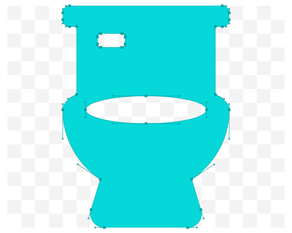

<!DOCTYPE html>
<html lang="en">

<head>
    <meta charset="UTF-8">
    <meta name="viewport" content="width=device-width, initial-scale=1.0">
    <!-- <meta name="viewport" content="initial-scale=1.0, user-scalable=no"> -->
    <meta http-equiv="X-UA-Compatible" content="ie=edge">
    <title>厕所</title>
    <style>
        * {
            margin: 0;
            padding: 0;
        }

        html,
        body {
            width: 100%;
            height: 100%;
        }

        #container {
            width: 100%;
            height: 100%;
        }

        .amap-logo {
            display: none !important;
        }

        .amap-copyright {
            display: none !important;
        }

        .amap-geolocation-con {
            bottom: 80px !important;
        }

        /* 获取定位后，标记点的样式 */
        .amap-marker-label {
            border: none;
            background: white;
            border-radius: 3px;
            position: relative;
        }

        .amap-marker-label::before {
            content: '';
            position: absolute;
            border-top: 8px solid transparent;
            border-bottom: 8px solid transparent;
            border-left: 8px solid transparent;
            border-right: 8px solid white;
            top: 50%;
            left: 0px;
            transform: translate(-100%, -50%);
        }

        .localMarker {
            padding: 3px 2px;
            display: flex;
            /* margin-right: 5px; */
            max-width: 150px;
        }

        .localMarkerImg img {
            width: 100%;
            height: 100%;
        }

        .localMarkerImg {
            width: 25px;
            height: 25px;
        }

        .localMarkerText,
        .localMarkerText p {
            flex: 1;
            font-size: 12px;
            overflow: hidden;
            text-overflow: ellipsis;
            white-space: nowrap;
        }

        .distance {
            margin-top: 3px;
            font-size: 12px;
        }
    </style>
</head>

<body>
    <div id="container"></div>
    <div id="panel"></div>
</body>
<script type="text/javascript"
    src="https://webapi.amap.com/maps?v=1.4.15&key=9b810a82c58604e9cfb4ff535814fa77"></script>
<script>
    window.onload = function () {

        var map = new AMap.Map('container', {
            zoom: 15,//级别
        });

        // 常量 start

        // 定位成功后标记点的内容
        var localMarkerContent = '<div class="localMarker"><div class="localMarkerImg"></div><div class="localMarkerText"><p>大花岭街与文化大道交叉口南50米</p><div class="distance">375米</div></div></div>'
        // 常量 end


        // 渲染标记点
        // dataSourceArr: 定位位置点数组, map:当前的 地图对象
        function renderMarker(posi, dataSourceArr, walking) {
            dataSourceArr.forEach((dataSource) => {
                // 地址名称
                var address = dataSource.address;
                // 距离
                var distance = dataSource.distance;
                // 目标点的位置
                var location = dataSource.location;
                // // 创建marker对象，标记目标物
                var marker = new AMap.Marker({
                    position: location, // 经纬度对象，也可以是经纬度构成的一维数组[116.39, 39.9]
                    label: {
                        // <div class="localMarkerText"><p>'+address+'</p><div class="distance">'+distance+'米</div></div>
                        content: '<div class="localMarker"><div class="localMarkerImg"></div></div>',
                        direction: 'right',
                        offset: new AMap.Pixel(10, -10),  //设置文本标注偏移量
                    },
                    topWhenClick: true,
                    bubble: true,
                    clickable: true,
                });
                AMap.event.addListener(marker, 'click', function () {
                    console.warn(dataSource)
                    painterWay(posi, location, walking);
                });
                AMap.event.addListener(marker, 'touchend', function () {
                    console.warn(dataSource)
                });
                // // 将创建的点标记添加到已有的地图实例：
                map.add(marker);
            });
        }


        // 绘制路线
        function painterWay(CurPosition, targetPosition, walking) {
            //根据起终点坐标规划步行路线
            walking.search(CurPosition, targetPosition, function (status, result) {
                // result即是对应的步行路线数据信息，相关数据结构文档请参考  https://lbs.amap.com/api/javascript-api/reference/route-search#m_WalkingResult
                if (status === 'complete') {
                    console.log('绘制步行路线完成')
                } else {
                    console.log(result);
                }
            });
            map.add(walking)
        }


        // 定位成功
        var onComplete = function (data) {
            // 清除地图上的所有标记物
            // map.clearMap();
            console.log(data);
            // 用户当前的位置
            var posi = data.position;
            if (data.info === 'SUCCESS' && data.status === 1) {
                AMap.service(["AMap.PlaceSearch", "AMap.Walking"], function () {
                    // 步行导航
                    var walking = new AMap.Walking({
                        map: map,
                        panel: "panel"
                    });
                    //构造地点查询类
                    var placeSearch = new AMap.PlaceSearch({
                        // type: '餐饮服务', // 兴趣点类别
                        pageSize: 10, // 单页显示结果条数
                        pageIndex: 1, // 页码
                        // city: "027", // 兴趣点城市
                        // citylimit: true,  //是否强制限制在设置的城市内搜索
                        map: map, // 展现结果的地图实例
                        panel: "panel", // 结果列表将在此容器中进行展示。
                        autoFitView: true // 是否自动调整地图视野使绘制的 Marker点都处于视口的可见范围
                    });
                    placeSearch.searchNearBy('卫生间', posi, 2000, function (status, result) {
                        console.log(result.poiList);
                        var llObj = result.poiList.pois[0].location;
                        // var name = result.poiList.pois[0].name;
                        renderMarker(posi, result.poiList.pois, walking);
                    });
                    // 搜索成功时的回调函数
                    AMap.event.addListener(placeSearch, 'complete', function (data) {
                        console.log(data);
                    })
                    // 搜索失败时的回调函数
                    AMap.event.addListener(placeSearch, 'error', function () {
                        alert('search fail!');
                    })

                });
            } else {
                alert('定位失败!');
            }
        }
        // 定位失败
        var onError = function (data) {
            alert('fail');
        }

        //异步加载插件
        AMap.plugin(['AMap.ToolBar', 'AMap.Scale', 'AMap.Geolocation'], function () {

            // 尺寸缩放
            var toolbar = new AMap.ToolBar();
            map.addControl(toolbar);

            // 比例尺
            var scale = new AMap.Scale();
            map.addControl(scale);

            // 定位
            var geolocation = new AMap.Geolocation({
                // 是否使用高精度定位，默认：true
                enableHighAccuracy: true,
                // 设置定位超时时间，默认：无穷大
                timeout: 10000,
                // 定位按钮的停靠位置的偏移量，默认：Pixel(10, 20)
                buttonOffset: new AMap.Pixel(10, 20),
                //  定位成功后调整地图视野范围使定位位置及精度范围视野内可见，默认：false
                zoomToAccuracy: true,
                // 是否显示定位按钮
                showButton: true,
                //  定位按钮的排放位置,  RB表示右下
                buttonPosition: 'LB'
            })
            geolocation.getCurrentPosition()
            // 定位成功时的回调函数
            AMap.event.addListener(geolocation, 'complete', onComplete)
            // 定位失败时的回调函数
            AMap.event.addListener(geolocation, 'error', onError)
            map.addControl(geolocation);
        });


    }
</script>

</html>